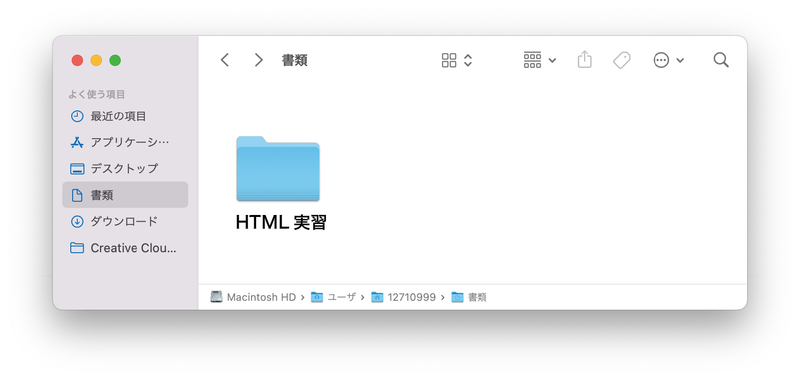
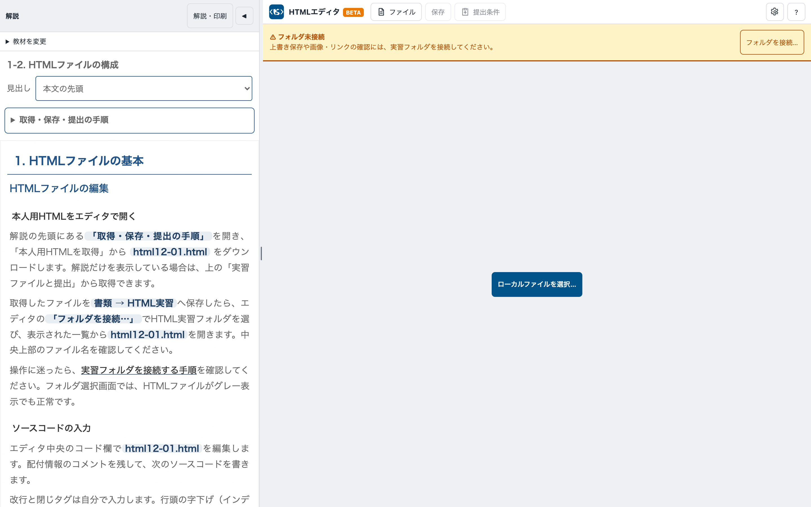
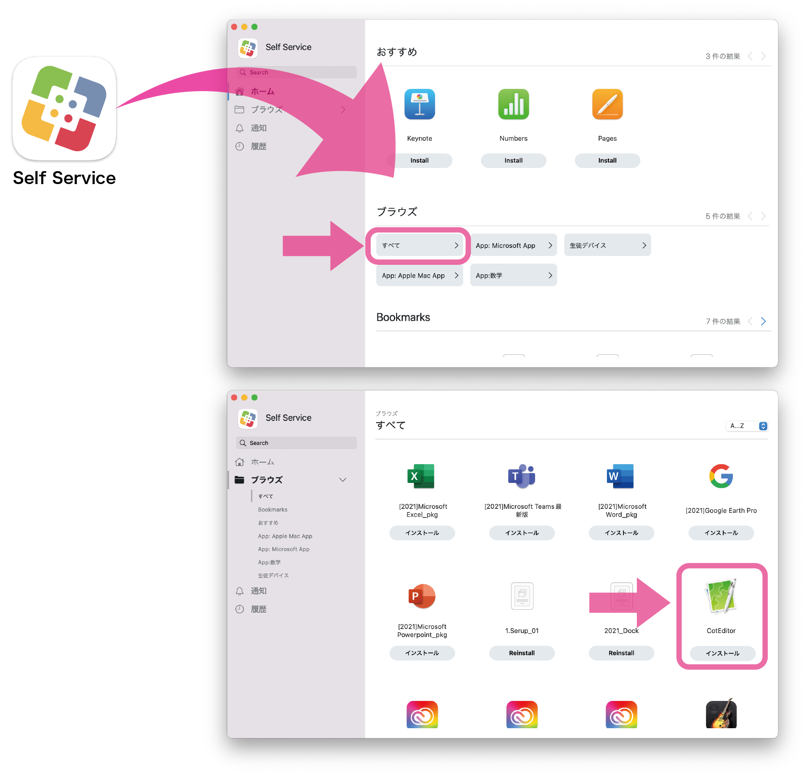

(1) HTMLとは
HTMLとは
HTMLとは、ハイパー テキスト マークアップ ランゲージ（Hyper Text Markup
Language）の略で、Webページを作成するための言語です。
ハイパーテキスト (hypertext) とは、複数の文書（テキスト）を相互に関連付け、結び付ける仕組みのことで、1965年にネルソンによって「テキストを超える」という意味から"hyper-"（～を超えた） "text"（文書）と名付けられました。
マークアップとは、コンテンツのはじめとおわりにタグとよばれるしるしをつけ、その部分に何らかの意味づけをすることを指します。
タグとは
タグとは、<と>で挟んで指定し、テキストに見出し，段落，箇条書き，強調，リンク，画像，表など、さまざまな役割を持たせるための特殊な文字列のことです。
次の例では、<h1>と</h1>に挟まれたテキストに見出しという意味を与えています。
<h1>見出し１</h1>
また、次の例では、<p>と</p>に挟まれたテキストに段落という意味を与えています。
<p>段落のはじまり</p>
このようなタグを使って、コンピュータがそのページの構造を理解できるようにすることがHTMLの役割です。
(2) 実習の進め方
このHTML実習のサイトの使い方について説明します。
例文ブロック
次の背景のブロックは例文ブロックです。HTMLの書き方の例を示しています。
特に書き写す必要はありませんが、例文を読んで理解してください。
この背景のブロックは例文ブロックです。
例文を読んで理解してください。
特に書き写す必要はありません。
実習ブロック（本人用HTMLを取得して編集）
次の背景のブロックは、実習ブロックです。エディタ上部の「課題ファイルのダウンロード」から受け取ったファイルを開き、コードを書き写しながら理解してください。空のファイルを新しく作るのではなく、指定された本人用HTMLを使います。
この背景のブロックは実習ブロックです。
自分のPCのファイルに、ここに記載されたコードを書き写しながら理解してください。
ブロックのタイトルに書かれたファイル名を確認し、
その課題の本人用HTMLを取得して編集してください。
実習ブロック（編集）
同じファイル名の実習ブロックが続く場合には、取得し直さず、開いているファイルを続けて編集してください。
この背景のブロックは実習ブロックです。
自分のPCのファイルに、ここに記載されたコードを書き写しながら理解してください。
同じファイル名なら、既に開いているファイルを続けて編集してください。
実習ブロック（一部のみ記載）
ファイル名のあとに記述場所を指定されている場合は、指定された場所にコードを書き写してください。次の例では実習コード①の場所にコードを記述します。
この背景のブロックは実習ブロックです。
自分のPCのファイルに、ここに記載されたコードを書き写しながら理解してください。
この場合は、既に作成しているHTMLファイルの実習コード①の場所に書き写してください。
なお、実習コード①の場所とは、テンプレートの中には次のように指示があります。
<!-- ▼実習コード① ここから▼ -->
<!-- ▲実習コード① ここまで▲ -->
(3) 実習の準備
実習ファイルの保存先
Finderの書類フォルダの中に、HTML実習というフォルダを作成します。これ以降、このフォルダへ本人用HTMLと実習で使う画像を保存していきます。

このフォルダに保存したファイルは、自動的にはバックアップされません。何かあったときに備えて、OneDriveやGoogle
Driveにも保存しておきましょう。
HTMLエディタを開く
授業では、Google Chromeで教材サイトのHTMLエディタを使います。左に解説、中央にコード、右にプレビューが表示されます。画面が狭いときは「解説」「コード」「プレビュー」で切り替えます。
実習する教材のリンク（例：1-2. HTMLファイルの構成）を開くと、対応するエディタへ進みます。最初はファイルが開かれていないので、コードとプレビューは空の状態です。

ファイルを開く前の画面。学校の実習では、本人用HTMLを保存してから実習フォルダを接続します。
本人用HTMLをダウンロードする
- エディタ上部の「課題ファイルのダウンロード」を押し、今回のファイルを選びます。操作に迷ったときは、同じ上部メニューの「実習の手順」を確認します。解説だけを別タブで開いている場合は「実習ファイルと提出」の「本人用HTMLを取得」からも進めます。
- 別画面で自分の学校アカウントを確認し、本人用HTMLを発行してダウンロードします。エディタの基本編集にはログイン不要ですが、学校の配付・提出では本人と課題の対象条件を確認します。
- 取得したファイルを、指定の名前のまま書類 → HTML実習へ保存します。「ダウンロード」に入った場合は、Finderで移動します。
同名ファイルがあると、html12-01 (1).htmlのように番号が付くことがあります。今回のファイルと以前の作業を取り違えず、指定の名前を確認してください。編集済みファイルを、取り直したテンプレートで上書きしないようにします。
取得ボタンが表示されない場合や利用対象外と表示された場合は、先生の案内を確認してください。ほかの人のファイルや、サイト内の古いサンプルを代わりに使わないでください。
実習フォルダを接続してファイルを開く
- エディタへ戻り、「フォルダを接続…」を押します。
- 書類 → HTML実習を開き、このフォルダを選択します。Chromeからアクセスの確認が出たら、対象がHTML実習フォルダであることを確認して許可します。
- 「読み込んだファイル」の一覧から、今回のHTMLを選びます。中央上部のファイル名が課題と一致していることを確認します。
フォルダを選ぶ画面では、HTMLファイルがグレー表示でも正常です。ファイルではなく、その入れ物である「HTML実習」フォルダを選びます。画像を使う実習でも「images」だけでなく、HTMLを含む「HTML実習」全体を接続してください。
フォルダが接続できたら、上部の未接続の案内は消えます。接続先の確認・変更・解除は「設定」、ほかのファイルを開く操作は「ファイル」→「読み込んだファイル一覧…」にあります。
入力・プレビュー更新・保存
中央のコード欄で編集します。タグの色分けは自動ですが、改行・字下げ・閉じタグは自分で入力します。Tabキーで半角スペース2つを入力できます。ファイルの先頭にある本人用の配付情報は、削除・変更しないでください。
- 表示の確認：プレビュー右上の更新アイコン（⌘Enter）を押します。プレビューの更新だけでは、Macのファイルに保存されません。
- ファイルの保存：上部の「保存」を押します。コード欄での⌘Sでも保存できます。接続したファイルでは「Macのファイルに保存しました」の表示を確認します。
エディタで⌘Rを押すと、プレビューだけでなくエディタ全体が再読み込みされます。表示の確認には、プレビューの更新アイコンを使ってください。
フォルダを接続できない場合・Safariで使う場合
「ローカルファイルを選択…」でHTMLを開いて編集できますが、ファイルを選ぶだけでは上書き保存の許可は付きません。接続先へ直接保存できない場合、「保存」はダウンロードになります。Finderで保存先・内容・ファイル名を確認してください。
画像やリンク先の確認には、「ファイル」→「フォルダを開く…」から実習フォルダ全体を読み込みます。上書き保存できない環境では、編集後のHTMLをダウンロードして実習フォルダへ戻します。
次回の再開と、困ったときの復旧
次回は、エディタで実習フォルダを接続し、Macに保存したファイルを開いて続きを編集します。教材を変更するだけでは、編集中のファイルは切り替わりません。
ブラウザの控えは万が一の復旧用で、起動・再読み込み時には自動で開きません。必要なときだけ「設定」→「困ったときの復旧」→「ブラウザの控えから復旧…」で日時とファイル名を確認して選び、復旧した内容をMacのファイルへ保存します。
保存に失敗したら編集画面を閉じずに先生へ相談してください。ブラウザの控えはクラウドのバックアップではありません。授業の終わりにはファイルを保存し、画像も含めてHTML実習フォルダ全体をOneDriveやGoogle Driveなどへコピーしておきましょう。
CotEditorを使う場合（補足）
HTMLエディタを利用できないときなどは、CotEditorでも同じ本人用HTMLを編集できます。以下はその場合の準備です。通常の実習では、ここにある設定は不要です。
-
Spotlightを開く（コマンド⌘＋スペース）
- 「CotEditor」と入力して開く（CotEditorが見つからない場合は、下記の手順でインストールする）
CotEditorのインストール
※CotEditorが既にインストールされている場合は、この操作は不要です。自動的にインストールするようにしましたが、もしインストールされていなかったら下記の手順に従ってインストールしてください。
Self Serviceを開きCotEditorをインストールします。HTMLファイルのソースを編集するときには、このアプリを使用します。

CotEditorの設定
CotEditorを開き、HTMLの編集をしやすくするための設定をします。
- シンタックス
-
ウインドウ右上のシンタックスをHTMLにします。シンタックス機能は、HTMLのタグなどに対して自動的に文字色をつけます。
- フォント
-
メニューバーの[CotEditor]＞[設定…]を開き（コマンド⌘＋カンマ,)、「外観」タブからフォントをOsaka
レギュラー 等幅に変更します。
CotEditorのバージョンによって、項目の名称や配置が異なる場合があります。
「Osaka レギュラー-等幅」がみつからない場合
- Spotlight（コマンド⌘＋スペース）を開き「Font Book.app」と入力する。
- Font Book.appを開く。
- 検索バーで「Osaka」と入力し、Osakaを探す。
- 「ダウンロード」ボタンを押して、ダウンロードする。
- 設定 → 編集 → インデント：
-
インデント幅を2スペースに変更します。
Tabキーで選択範囲をインデントにチェックを入れます。
- 設定 → ウインドウ → 表示
-
行番号にチェックを入れます。
不可視文字にチェックを入れ、下位項目すべてにチェックを入れます。
インデントガイドにチェックを入れます。
Finderで本人用HTMLを右クリックし、「このアプリケーションで開く」→「CotEditor.app」を選びます。編集後はCotEditorで⌘Sを押して保存し、同じHTMLをChromeやSafariで開いて表示を確認します。こちらの保存済みHTMLの表示画面では、変更後に⌘Rで再読み込みします。
提出には、各課題の「実習ファイルと提出」にある「提出する」から提出フォームを開き、保存した本人用HTMLを選んで送信します。受領の表示まで確認してください。